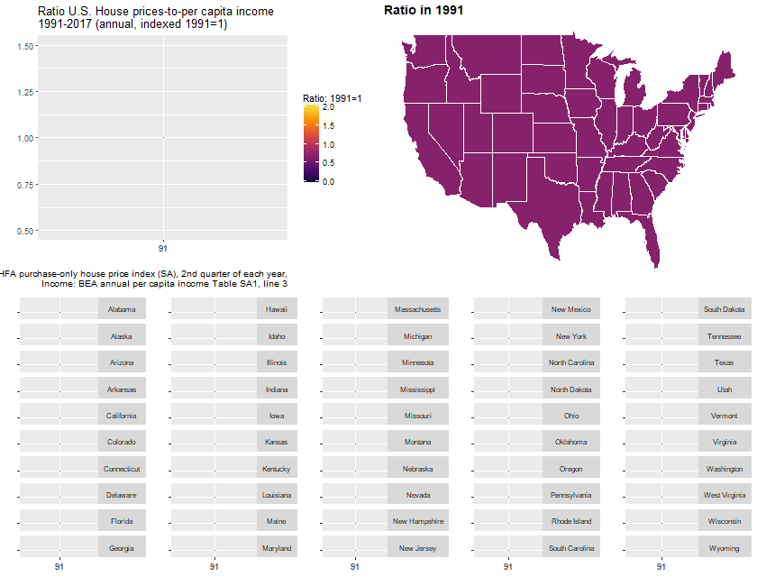
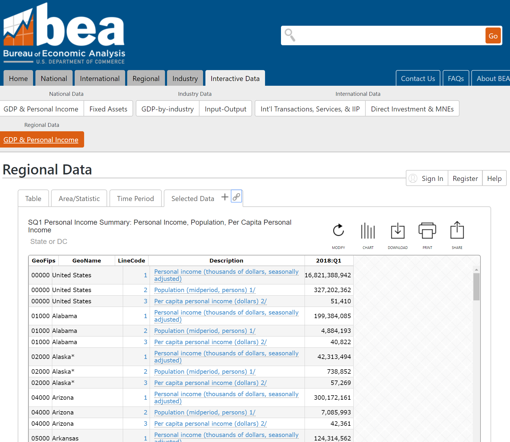
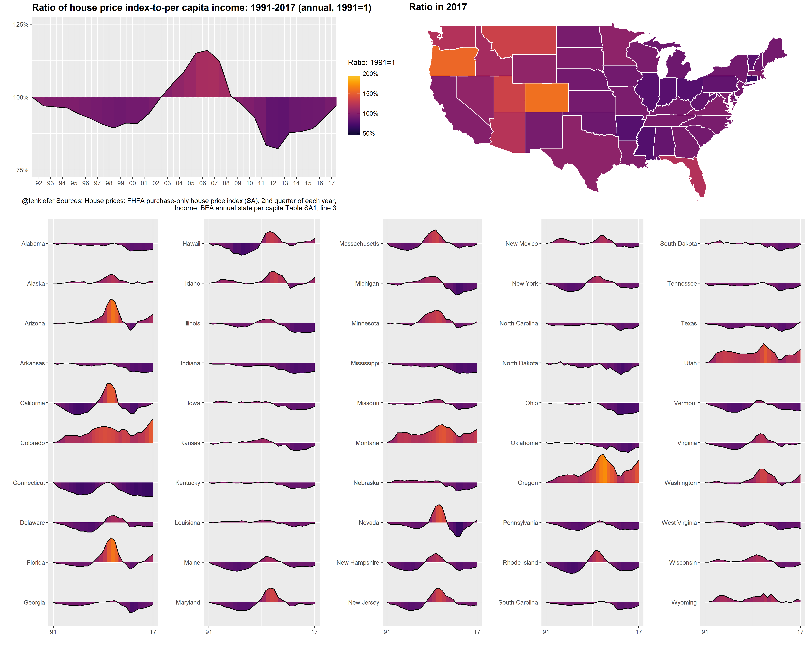

In this post we will create some plots of house prices and incomes for the United States and individual states. We will also try out the bea.R package to get data from the U.S. Bureau of Economic Analysis.
We’ll end up with something like this:

Per usual we’ll do it with R and I’ll include code so you can follow along.
Data
We’re going to use two sources of data. First, we’ll get the FHFA house price index and then we’ll get per capita income estimates from the United States Bureau of Economic Analysis (BEA).
We could get most of these data via the Saint Louis Federal Reserve’s FRED. While FRED is a great resource, as much as possible I like to go directly to the source for the data. This also gives us a chance to work with the bea.R package, available on CRAN.
Let’s get to wrestling the data.
House Price Index
The house price index data we want is available via a flat text file on the FHFA webpage (large .csv file). We can use the data.table function data.table::fread() to read the data in. Then we’ll filter the file down to the quarterly purchase-only house price index for states and the United States.
# Load Libraries ----
library(data.table)
library(tidyverse)
library(ggridges) #for gradient shading
library(viridis)
library(bea.R)
library(tigris) # for maps
library(cowplot)
library(animation) #for animation
library(ggthemes)
# This gets all hpi data
df.hpi<-fread("https://www.fhfa.gov/DataTools/Downloads/Documents/HPI/HPI_master.csv")
# Take a look
knitr::kable(head(df.hpi))| hpi_type | hpi_flavor | frequency | level | place_name | place_id | yr | period | index_nsa | index_sa |
|---|---|---|---|---|---|---|---|---|---|
| traditional | purchase-only | monthly | USA or Census Division | East North Central Division | DV_ENC | 1991 | 1 | 100.00 | 100.00 |
| traditional | purchase-only | monthly | USA or Census Division | East North Central Division | DV_ENC | 1991 | 2 | 100.99 | 101.09 |
| traditional | purchase-only | monthly | USA or Census Division | East North Central Division | DV_ENC | 1991 | 3 | 101.35 | 101.02 |
| traditional | purchase-only | monthly | USA or Census Division | East North Central Division | DV_ENC | 1991 | 4 | 101.76 | 101.07 |
| traditional | purchase-only | monthly | USA or Census Division | East North Central Division | DV_ENC | 1991 | 5 | 102.38 | 101.45 |
| traditional | purchase-only | monthly | USA or Census Division | East North Central Division | DV_ENC | 1991 | 6 | 102.80 | 101.56 |
There are several files detailing information about the house price index. Additional details can be found here.
We want to grab the traditional type, purchase-only flavor, quarterly frequency. We’ll set up two data.frames that are subsets of the large data. One for the United States and one for the states.
# get quarterly purchase-only index for the United States
df.usa <-df.hpi[frequency=="quarterly" & hpi_flavor=="purchase-only" & place_name== "United States",][, hpa:=index_sa/shift(index_sa,4)-1][,date:=as.Date(ISOdate(yr,period*3,1))]
# get quarterly purchase-only state indices
df.st <- df.hpi[frequency=="quarterly" & hpi_flavor=="purchase-only" & level=="State",]
df.st <- df.st[,date:=as.Date(ISOdate(yr,period*3,1))]
# Drop D.C.
df.st <- df.st[place_name !="District of Columbia",]
df.st <- df.st[, place_namef:=factor(place_name)]BEA data
Let’s set aside the house price data for now and go get income data from the BEA. We’ll use the bea.R package. In order for this to work for you, make sure you get an API key as detailed in the bea.R documentation. Once you have a key, you’ll then need to figure out what table you need and how to use the API. This example could help.
For example, per capita income estimates can be found in table SQ1.

beaKey <- 'YOUR-API-KEY' #need a key from BEA
# get annual data for US
beaSpecs <- list(
'UserID' = beaKey ,
'Method' = 'GetData',
'datasetname' = 'RegionalIncome',
'GeoFIPS' = '00000',
'TableName' = 'SA1',
'Frequency' = 'A',
'Year' = 'ALL', # All available years
'ResultFormat' = 'json',
'LineCode' = '3' # variable, line 3 corresponds to per capita income
)
us.pcA <- beaGet(beaSpecs, asWide=FALSE) #query BEA, use a wide format
us.pcA <- mutate(us.pcA, yr=substr(TimePeriod,1,4), qtr=2) %>% mutate(date=as.Date(ISOdate(as.numeric(yr),as.numeric(qtr)*3,1)))
# get quarterly data for US
beaSpecs <- list(
'UserID' = beaKey ,
'Method' = 'GetData',
'datasetname' = 'RegionalIncome',
'GeoFIPS' = '00000', #US
'TableName' = 'SQ1',
'Frequency' = 'Q', # quarterly frequency
'Year' = 'ALL',
'ResultFormat' = 'json',
'LineCode' = '3' # variable, line 3 corresponds to per capita income
)
us.pcQ <- beaGet(beaSpecs, asWide=FALSE) %>% filter(!is.na(DataValue))
us.pcQ <- mutate(us.pcQ, yr=substr(TimePeriod,1,4), qtr=substr(TimePeriod,6,6)) %>% mutate(date=as.Date(ISOdate(as.numeric(yr),as.numeric(qtr)*3,1)))
knitr::kable(tail(us.pcQ)) # prints header of table| Code | GeoFips | GeoName | TimePeriod | CL_UNIT | UNIT_MULT | DataValue | NoteRef | yr | qtr | date | |
|---|---|---|---|---|---|---|---|---|---|---|---|
| 28 | SQ1-3 | 00000 | United States | 2016Q4 | dollars | 0 | 49350 | NA | 2016 | 4 | 2016-12-01 |
| 29 | SQ1-3 | 00000 | United States | 2017Q1 | dollars | 0 | 49962 | NA | 2017 | 1 | 2017-03-01 |
| 30 | SQ1-3 | 00000 | United States | 2017Q2 | dollars | 0 | 50172 | NA | 2017 | 2 | 2017-06-01 |
| 31 | SQ1-3 | 00000 | United States | 2017Q3 | dollars | 0 | 50463 | NA | 2017 | 3 | 2017-09-01 |
| 32 | SQ1-3 | 00000 | United States | 2017Q4 | dollars | 0 | 50951 | NA | 2017 | 4 | 2017-12-01 |
| 33 | SQ1-3 | 00000 | United States | 2018Q1 | dollars | 0 | 51410 | NA | 2018 | 1 | 2018-03-01 |
To get the states, we need a list of state FIPS codes. I happen to have a text file here that has states FIPS codes and regions. Unfortunately this file only has 2 digit FIPS codes formatted as numbers. We need 5 digit numbers (padded left with a leading zero if less than 10 and 3 trailing zeros).
region <- fread("http://lenkiefer.com/img/charts_feb_20_2017/region.txt")
knitr::kable(head(region))| fips | statecode | statename | division | region |
|---|---|---|---|---|
| 9 | CT | Connecticut | New England Division | Northeast Region |
| 23 | ME | Maine | New England Division | Northeast Region |
| 25 | MA | Massachusetts | New England Division | Northeast Region |
| 33 | NH | New Hampshire | New England Division | Northeast Region |
| 44 | RI | Rhode Island | New England Division | Northeast Region |
| 50 | VT | Vermont | New England Division | Northeast Region |
Now we can create a list and feed it to the beaSpecs list we created.
fips.list<- str_pad(region$fips*1000,5,"left","0") #pad the fips numbers with leading and trailing zeros
# get state annual data
beaSpecs <- list(
'UserID' = beaKey ,
'Method' = 'GetData',
'datasetname' = 'RegionalIncome',
'GeoFIPS' = paste(fips.list,collapse=", "), # convert our list into a coma separated string
'TableName' = 'SA1',
'Frequency' = 'A',
'Year' = 'ALL',
'ResultFormat' = 'json',
'LineCode' = '3'
)
st.pcA <- beaGet(beaSpecs, asWide=FALSE)
st.pcA <- mutate(st.pcA, yr=substr(TimePeriod,1,4), qtr=2) %>% mutate(date=as.Date(ISOdate(as.numeric(yr),as.numeric(qtr)*3,1)))
# if we wanted quarterly data we could go to table SQ1:
# get state quarterly data
beaSpecs <- list(
'UserID' = beaKey ,
'Method' = 'GetData',
'datasetname' = 'RegionalIncome',
'GeoFIPS' = paste(fips.list,collapse=", "),
'TableName' = 'SQ1',
'Frequency' = 'A',
'Year' = 'ALL',
'ResultFormat' = 'json',
'LineCode' = '3'
)
st.pcQ <- beaGet(beaSpecs, asWide=FALSE) %>% filter(!is.na(DataValue))
st.pcQ <- mutate(st.pcQ, yr=substr(TimePeriod,1,4), qtr=substr(TimePeriod,6,6)) %>% mutate(date=as.Date(ISOdate(as.numeric(yr),as.numeric(qtr)*3,1)))Merge the data
Now we’re ready to merge the data. But we have a problem. The house price index data is quarterly, but the quarterly income series only goes back to 2010. If we want a longer time series we either have to interpolate the income data or somehow aggregate the house price index data. I choose the latter. The annual per capita income estimates are midyear, so I’ll take the Q2 house price index data and merge it to the annual per capita income estimates.
We also have a problem in that the state names have asterisks for Alaska and Hawaii. We’ll use gsub to get rid of the asterisks in the state names.
# get rid of astericks from Alaska and Hawaii
st.pcA$GeoName<- gsub("[*].*$","",st.pcA$GeoName)
st.pcQ$GeoName<- gsub("[*].*$","",st.pcQ$GeoName)And now we are ready to join the data. Using a left assignment I might add.
# merge to df.usa q=2 for US data
dt.us <- left_join(filter(df.usa,period==2), select(us.pcA ,date,DataValue), by="date") %>%
mutate(hpi=index_sa/index_sa[yr==1991],
inc=DataValue/DataValue[yr==1991]) %>% ungroup() %>% data.table()
# for states join hpi (for Q2) with bea annual income
df.combined <- left_join(df.st %>% filter(period==2), st.pcA %>% select(Code,GeoName,GeoFips,CL_UNIT,date,DataValue), by=c("place_name"="GeoName","date"="date")) %>% data.table()
df.combined <- left_join(df.combined, region ,by=c("place_id"="statecode"))
# compute values relative to 1991 Q4:
df.combined %>% group_by(place_id) %>% mutate(hpi=index_sa/index_sa[yr==1991],
inc=DataValue/DataValue[yr==1991]) %>%
ungroup() %>% data.table() -> dtCharts
As I was making this post, I went down a very dark and twisted path. I eventually ended up trying to replicate ggplot2 facets, using ggplot2! But we can skip most of that business and just use standard facets. You can see the results of that experiment on Twitter:
#dataviz experiment. little animated sparklines pic.twitter.com/xkoNFCCsM7
— 📈 Len Kiefer 📊 (@lenkiefer) June 23, 2018
Let’s begin by comparing annual house prices and per capita income for the United States. It will be useful to construct a function.
# list of dates
dlist2 <- unique(dt.us$date)
gf2.us <- function(i=27){
ggplot(data=dt.us[date>=dlist2[1] & date<=dlist2[i], ],
aes(x=date,y=hpi,group=place_name))+
geom_line(aes(color="House Prices"),size=1.05)+
geom_line(aes(color="Per capita income", y=inc),linetype=2,size=1.025)+
theme(strip.text.y = element_text(angle = 0, size=8))+
scale_color_manual(name="indicates: ",values=c("#d73027","#4575b4"))+
labs(y="",x="", title="U.S. House prices and per capita income: 1991-2017 (annual, indexed 1991=1)",
caption="@lenkiefer Sources: House prices: FHFA purchase-only house price index (SA), 2nd quarter of each year,\nIncome: BEA annual per capita income Table SA1, line 3")+
theme(legend.position="top")+
scale_x_date(limits=c(min(dt.us$date), max(dt.us$date)),date_breaks="1 year", date_labels="%y")+
scale_y_continuous(breaks=seq(0,2.5,0.5), limits=c(0.5,2.6))
}
gf2.us()
Next, we can construct the ratio of these two index values to see how much house prices have moved relative to incomes.
gf.us <- function(i=27){
ggplot(data=dt.us[date>=dlist2[1] & date<=dlist2[i], ],
aes(x=date,y=hpi/inc,group=place_name))+geom_line()+
theme_gray()+
theme(strip.text.y = element_text(angle = 0, size=8))+
geom_ridgeline_gradient(aes(fill=hpi/inc, height=hpi/inc-1,y=1), color="black", min_height= -1) +
labs(y="",x="", title="Ratio U.S. House prices-to-per capita income\n1991-2017 (annual, indexed 1991=1)",
caption="@lenkiefer Sources: House prices: FHFA purchase-only house price index (SA), 2nd quarter of each year,\nIncome: BEA annual per capita income Table SA1, line 3")+
scale_fill_viridis(option="B", name="Ratio: 1991=1 ",end=0.9,begin=0.1, limits=c(0,2)) +
theme(legend.position="top")+
scale_x_date(limits=c(dlist2[1], dlist2[i]),breaks=c(dlist2[1], dlist2[i]), date_labels="%y")+
scale_y_continuous(breaks=seq(0,2.5,0.25), limits=c(0.5,1.5))
}
gf.us()
It might be instructive to make a map. We’ll use the tigris package to construct a state map for the United States (excluding Alaska and Hawaii).
us_geo2 <- states(cb=TRUE)
us_geo48 <- us_geo2[! us_geo2@data$STUSPS %in% c("AK","PR","VI","HI","GU","MP","AS"), ]
us_geo48@data$id <- rownames(us_geo48@data)
us_geo48f <- fortify(us_geo48)
us_geo48f <- left_join(us_geo48f,us_geo48@data, by="id")Then we can create a map.
gmap.us <- function(i=27){
df.map <- left_join(us_geo48f,dt[date==dlist2[i],], by=c("NAME"="place_name"))
g.map <-
ggplot(data=df.map,
aes(x=long,y=lat, map_id=id, group=group,
fill=hpi/inc))+
geom_polygon(color="white")+theme_map()+
scale_fill_viridis(option="B", name="Ratio: 1991=1 ", label=scales::percent, end=0.9,begin=0.1, limits=c(.5,2))+
labs(title=paste0("Ratio in ",as.character(dlist2[i],"%Y")))+
theme(legend.position="none",
plot.caption=element_text(hjust=1),
plot.title=element_text(hjust=0,face="bold",size=14))
g.map
}
gmap.us()+
theme(legend.position="top")+
labs(title="House price-to-per capita income ratio in 2017 (1991=1)",caption="@lenkiefer Sources: House prices: FHFA purchase-only house price index (SA), 2nd quarter of each year,\nIncome: BEA annual per capita income Table SA1, line 3")
Now we can combine our timeline for the United States and map with a set of little timelines for the states.
# create a factor
dt <- dt[, place_namef:=factor(place_name)]
# reverse order of factor:
df.st$place_namef<- factor(df.st$place_namef, levels=rev(levels(df.st$place_namef)))
gf <- function(i,in.start,in.end){
ggplot(data=dt[ place_namef %in% levels(dt$place_namef)[in.start:in.end] & date>=dlist2[1] & date<=dlist2[i], ],
aes(x=date,y=hpi/inc,group=place_name))+geom_line()+facet_grid(place_name~.)+
theme(strip.text.y = element_text(angle = 0, size=8))+
geom_ridgeline_gradient(aes(fill=hpi/inc, height=hpi/inc-1,y=1), color="black", min_height= -1) +
labs(y="",x="")+
scale_fill_viridis(option="B", name="Ratio: 1991=1 ", label=scales::percent,end=0.9,begin=0.1, limits=c(0,2)) +
theme(legend.position="none", axis.text.y=element_blank())+
scale_x_date(limits=c(dlist2[start], dlist2[i]),breaks=c(dlist2[start], dlist2[i]), date_labels="%y")+
scale_y_continuous(breaks=1, limits=c(0.5,2))
}
myf6 <- function(i=27){
g.spark <- cowplot::plot_grid(gf(i,41,50),gf(i,31,40),gf(i,21,30),gf(i,11,20),gf(i,1,10),ncol=5)
cowplot::plot_grid(cowplot::plot_grid(gf.us(i),gmap.us(i),ncol=2),g.spark,ncol=1)
}
myf6() 
And then we can animate it. See here for many posts on animating charts.
saveGIF({for (i in 1:length(dlist2)){
g<-myf6(i)
print(g)
print(paste(i,"out of",length(dlist2)))
ani.pause()
}
for (ii in 1:10){
print(g)
ani.pause()
print(ii)
}
}, movie.name = "spark6.gif", ani.width=840, ani.height=650)You could modify the code above to keep the axis fixed: